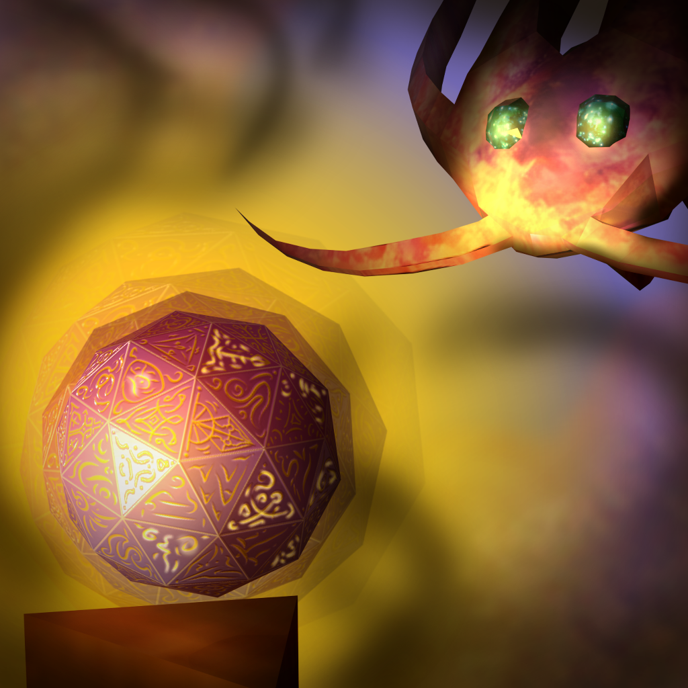
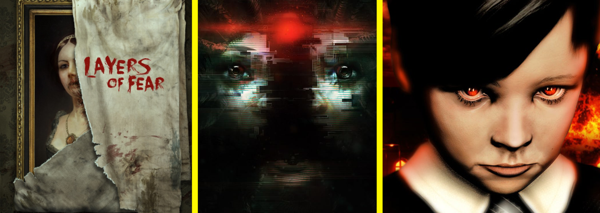

Section 01 // Systems
Horror Systems & Tension Design
I know how to craft fear, pacing, tension, and player vulnerability. This is where I spend the most time: systems that decide when something frightening happens, not just what.
> hover a file below and watch the index react

FILE 01 // FLAGSHIPEnemy-driven tension
Tension Design with enemy
Designed a dynamic fear escalation system based on enemy
Fear Index • Zinnia • three player archetypes • live simulator
Open file →
FILE 02Analysis
Case Study Horror Design Breakdown
Analyzing 3 industry horror games from a systems viewpoint
Open file → FILE 03
FILE 03
Experiment
The Things Left Behind: Tension Design Experiment
Can a game build sustained dread without ever attacking the player? Three industry horror games broken down as systems, then a prototype built to test the answer.
Open file → FILE 04
FILE 04
Pacing system · WIP
The Tension Laboratory: Designing When Horror Happens
What if horror events didn't just happen randomly, but asked permission? A designer-facing pacing system in Unreal Engine 5.6 where a Director picks which anomaly fires, when, and records why it said no. Includes a playable Director simulator.
Open file →